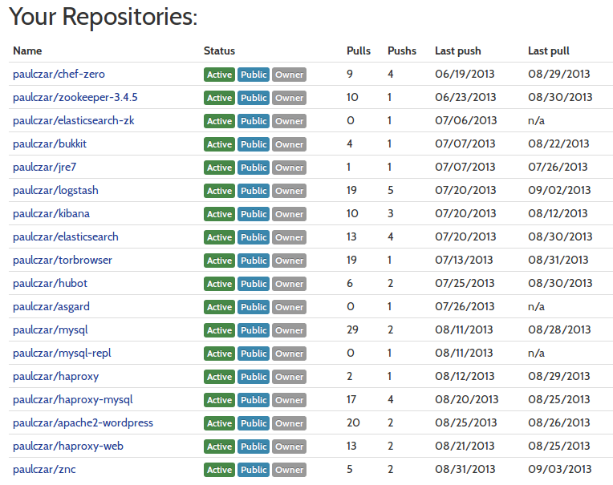
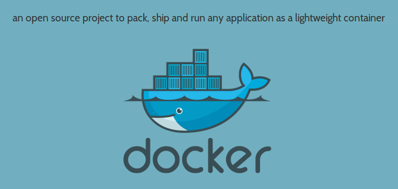
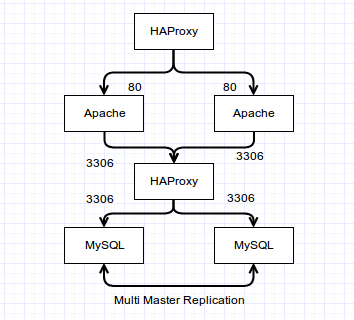
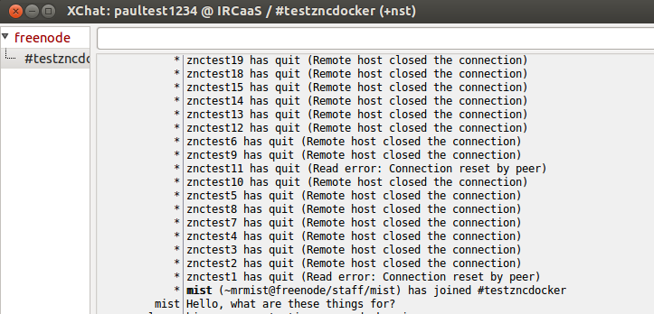

Getting Ship Done
(and other bad puns)
with Docker
Created by Paul Czarkowski / @pczarkowski
About Me
Australian...
I am not a devops
What even is devops ?
I quit my job!
and you should too...
Don't fight stupid. Make more awesome. @jesserobbins
Talk to the guy sitting beside you, he's probably hiring for awesome right now.
Amateur Chef hacker...
Also the other kind of Amateur Chef...
Best Queso in Austin - 2013
And A Docker Hacker...

What is docker anyway?

What is docker anyway?
- https://www.docker.io/learn_more
- Containers not Virtualization
- Run anywhere!
- Lightweight and Cheap
- uses LXC
- Layered Filesystem
Live Demos
- `git clone https://github.com/paulczar/devops-austin-docker.git`
- All demos are in the `live_demo` directory
- Assume you're on a Linux box with Docker 6.x installed
- ^ Should be able to run inside vagrant if not linux.
- If demo goes haywire './clean.sh' will nuke all running containers.
Docker 101
Run a Docker Container
Interactive Shell
docker run -i -t busybox /bin/shRun a command
docker run busybox cat /etc/passwdRun an application
docker run -d -p 3306 paulczar/mysql mysqld_safeDocker 102
Container Management
Show running containers
docker psGet details on specific container
docker inspect [container-id]list public port NAT to a container
docker port [container-id] [private-port]Read logs from a container
docker logs [container-id]Docker 103
Single Container Orchestration with SHELL
MYSQL=$(docker run -d -p 3306 paulczar/mysql mysqld_safe)
MYSQL_IP=$(docker inspect $MYSQL | grep IPAd | awk -F'"' '{print $4}')
MYSQL_PORT=$(docker port $MYSQL 3306)
sleep 2
echo "select now() \G" | mysql -uroot -proot -h 127.0.0.1 -P $MYSQL_PORT
echo "select now() \G" | mysql -uroot -proot -h $MYSQL_IP
Docker 103 - Live Demo
source ./docker103.sh
mysql -uroot -proot -h 127.0.0.1 -P $MYSQL_PORT
^C
Docker 104
Multi Tier Wordpress: Dev -> Stage -> Prod
https://github.com/paulczar/docker-wordpress Docker 104
Multi Tier Wordpress: Dev -> Stage -> Prod
git clone https://github.com/paulczar/docker-wordpress.git
cd docker-wordpress
# Deploy single node development environment with Vagrant
vagrant up
# Deploy 6 container web stack
source ./docker
# Deploy 6 node web stack on openstack (with Docker driver)
source ./openstack
^ not live demo ... just showing workflow
Docker 104 - Live Demo
cd docker104 && source ./docker && cd ..
curl http://${HAPROXY_WEB_IP} | wc -l
Add wordpress [HAPROXY_WEB_IP] to /etc/hosts if you want to display properly web browser
Docker 105
Docker Index
docker pull paulczar/mysql
docker push paulczar/mysql
docker pull samalba/docker-registry
Docker 201
Build a base image
Base images are just a .tgz of /
Ubuntu cloud image archive makes this easy <3
wget -O /tmp/precise.tgz \
http://cloud-images.ubuntu.com/.../precise-...-amd64-root.tar.gz
cat /tmp/precise.tgz | \
sudo docker import - precise-cloud-image
docker run precise-cloud-image lsb_release -a
Docker 202
Build a container with a Dockerfile
# This file creates a container that
# runs MySQL Server when started
# Author: Paul Czarkowski
# Date: 08/04/2013
FROM ubuntu:12.04
MAINTAINER Paul Czarkowski "paul@paulcz.net"
RUN apt-get update
RUN apt-get -y install mysql-server
ADD mysql-listen.cnf /etc/mysql/conf.d/mysql-listen.cnf
# Start mysql server
CMD ["/usr/bin/mysqld_safe"]
Docker 202
Build a container with a Dockerfile
# Build container from local directory
docker build -t demo/mysql .
# Build container from github repo
docker build -t demo/mysql github.com/paulczar/docker-mysql
Docker 203
Slightly more complicated Dockerfile
Docker 203
Dockerfile
# This file creates a container that runs ZNC
#
# Author: Paul Czarkowski
# Date: 08/04/2013
FROM ubuntu:12.10
MAINTAINER Paul Czarkowski "paul@paulcz.net"
RUN apt-get update
RUN apt-get -y install znc
ADD start-znc /usr/local/bin/start-znc
ADD znc.pem /opt/znc/znc.pem
ADD znc.conf /opt/znc/configs/znc.conf
RUN chmod +x /usr/local/bin/start-znc
RUN useradd znc
RUN chown -R znc:znc /opt/znc
EXPOSE 6667
CMD ["start-znc"]
Docker 203
start-znc
#!/bin/bash
ZNC_USER=${ZNC_USER:-$(tr -dc "[:alpha:]" < /dev/urandom | head -c 8)}
ZNC_PASS=${ZNC_PASS:-$(tr -dc "[:alpha:]" < /dev/urandom | head -c 8)}
IRC_SERVER=${IRC_SERVER:-'irc.freenode.net'}
IRC_PORT=${IRC_PORT:-'6667'}
ZNC_SALT="$(dd if=/dev/urandom bs=16c count=1 | md5sum | awk '{print $1}')"
ZNC_HASH="sha256#$(echo -n ${ZNC_PASS}${ZNC_SALT} | sha256sum | awk '{print $1}')#$ZNC_SALT#"
sed -i "s/ZNC_USER/$ZNC_USER/" /opt/znc/configs/znc.conf
sed -i "s/ZNC_HASH/$ZNC_HASH/" /opt/znc/configs/znc.conf
sed -i "s/IRC_SERVER/$IRC_SERVER/" /opt/znc/configs/znc.conf
sed -i "s/IRC_PORT/$IRC_PORT/" /opt/znc/configs/znc.conf
znc -f -r -d /opt/znc
Docker 203
Build and Run
$ docker build -t demo/znc github.com/paulczar/docker-znc
$ docker run -e ZNC_USER=paultest -e ZNC_PASS=paultest \
-p 6667 -u znc demo/znc start-znc
Connecting to IRC Server: irc.freenode.net:6667
ZNC User: paultest
ZNC Pass: paultest
Opening Config [/opt/znc/configs/znc.conf]...
Loading Global Module [lastseen]... [/usr/lib/znc/lastseen.so]
Binding to port [+6667] using ipv4...
Loading user [paultest]
Adding Server [irc.freenode.net 6667]...
Docker 203 - Live Demo
./docker203.sh
Docker 203
Write a Ruby on Rails app and Ship it!
Stress Test
for i in {1..100}; do
docker run -e ZNC_USER=znctest$i -e ZNC_PASS=znctest$i -d -p 6667 -u znc paulczar/znc start-znc
done
A 512mb rackspace public cloud instance runs 100 ZNC containers without stress...
Could probably handle a lot more ...
but IRCops aren't amused...
Docker 301
Configuration Management with Chef-Solo
Docker 301
Berksfile
site :opscode
cookbook 'apache2'
Docker 301
solo.json
{
"run_list": ["recipe[apache2::default]"]
}
solo.rb
root = File.absolute_path(File.dirname(__FILE__))
file_cache_path root
cookbook_path root + '/cookbooks'
Docker 301
Dockerfile
# DOCKER-VERSION 0.5.3
FROM paulczar/chef-client
MAINTAINER Paul Czarkowski "paul@paulcz.net"
RUN apt-get -y update
ADD . /chef
RUN cd /chef && /opt/chef/embedded/bin/berks install --path /chef/cookbooks
RUN chef-solo -c /chef/solo.rb -j /chef/solo.json
CMD ["apache2", "-D", "FOREGROUND"]
docker build -t demo/chef-apache .
docker run -d -p 8080:80 demo/chef-apache
Docker 301 - Live Demo
./docker301.sh
curl localhost:8085
Docker 302
Logging, Service Management, Metrics
- SysAdmins like to know what is going on.
- It is not obvious how to do these things with docker.
- But they can be done.
Docker 302
Omnibus gives us some magic we can plug into
https://speakerdeck.com/lusis/the-magic-omnibus
- Builds app and all deps in vendored directory
- Chef is built this way.
- Uses a Vagrant/FPM build factory to produce deb/rpm files
- Omnibus Kibana (kibana+nginx+runit)
Using runit in the package gets us closer to service control
Docker 302
LXC provides metrics if you know where to look
http://blog.docker.io/2013/10/gathering-lxc-docker-containers-metrics/Docker 302
Docker Volume
- You can map a directory from the host to a volume in container
- This gives you a place to modify files that both host and container can see.
docker run -d -v /opt/website/html:/var/www/html paulczar/apache2
Docker 302
Dockerfile for Omnibus'd Kibana
# DOCKER-VERSION 0.5.3
FROM ubuntu
MAINTAINER Paul Czarkowski "paul@paulcz.net"
ADD https://s3-us-west-2.amazonaws.com/paulcz-packages/kibana3_amd64.deb \
/tmp/kibana3_amd64.deb
RUN dpkg -i /tmp/kibana3_amd64.deb
CMD ["/opt/kibana3/embedded/bin/runsvdir-start"]
Docker 302
Tie it all together
#!/bin/bash
docker build -t demo/kibana .
BASE=$(pwd)
SHORT_ID=$(docker run -d -p 8089:80 -p 8443:443 \
-v $BASE/sv:/opt/kibana3/sv \
-v $BASE/init:/opt/kibana3/init \
-v $BASE/service:/opt/kibana3/service \
-v $BASE/log:/var/log/kibana \
demo/kibana)
LONG_ID=$(docker inspect ${SHORT_ID} | grep ID | awk '{print $2}' | sed 's/"//g' | sed 's/,//g')
for DIR in $(grep cgroup /proc/mounts | awk '{print $2}' | sed "1 d" | xargs)
do
STAT=$(basename $DIR)
ln -s $DIR/lxc/$LONG_ID stats/${STAT}
done
Docker 302 - Live Demo
Build and run the container
cd docker302 && ./demo.sh
echo "This should fail ... nginx service not running"
curl localhost:8089
Start nginx service
echo "Start the nginx service and try again .. should work"
cd service && ln -s ../sv/nginx && cd ..
sleep 5 && curl localhost:8089
Stop nginx service
echo "Stop the nginx service again ... should fail"
rm service/nginx && sleep 5 && curl localhost:8089
Docker 302 - Live Demo
nginx is logging to a docker volume
ls log/*.log
cat log/access.log
container specific system metrics are symlinked
ls stats
cat stats/memory/memory.stat
cd ..
Docker Cleanup
By now we're running a ton of containers
docker ps -a
`docker rm` and `docker kill` are your friends
I made your a cleanup script that invokes both
./clean.sh
root owned dir (created by runit) nuke it
sudo rm -rf docker302/sv/nginx/supervise